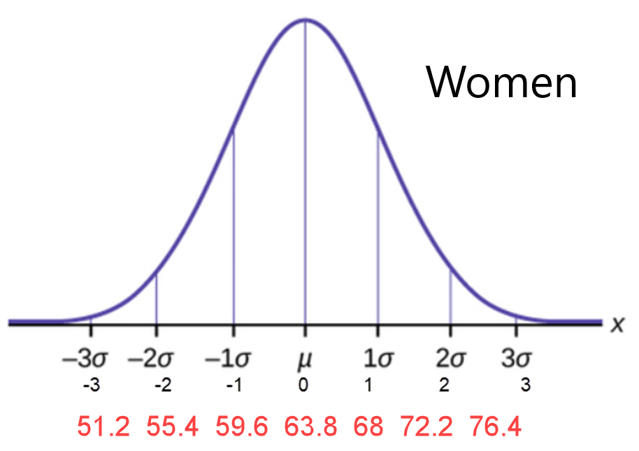

3.4 Empirical Rule
Calculating z-scores
z-score: the number of standard deviations a given value of x is above or below the mean.Sample: \(z=\frac{x-\overline{x}}{s}\)
Population: \(Z=\frac{x-\mu}{\sigma}\)
- Compare the following z-scores and interpret the results. The mean ACT score in the US is 24 with a standard deviation of 4. The mean SAT score in the US is 1100 with a standard deviation of 80. If Alice scores 32 on the ACT and Bob scores 1200 on the SAT, which has a better score, relative to the sample data?
- Alice's score on the ACT
- Alice's z-score:
\(\mu=24 ; \quad \sigma=4 ;\quad x=32 ;\quad Z=\frac{x-\mu}{\sigma}\)
\(Z_{32}=\frac{32-24}{4}=2.00\)
- What does this z score mean (in words)?
Alice’s ACT score of 32 is 2 standard.deviations above the population mean of 24.
- Sketch a bell curve and mark the score on the curve

- Alice's z-score:
- Bob's score on the SAT
- Bob's z-score: \(\mu=1100 ; \quad \sigma=80 ; \quad x=1200\)
\(Z_{1200}=\frac{1200-1100}{80}=1.25\)
- What does this z score mean (in words)?
Bob’s SAT score of 1200 is 1.25 standard deviations above the population mean of 1100.
- Sketch a bell curve and mark the score on the curve

- Bob's z-score: \(\mu=1100 ; \quad \sigma=80 ; \quad x=1200\)
- Relative to other students in the population, which score is better?
Alice’s relative score is better. She is 2 standard deviations above the mean. Bob’s score is only 1.25 standard deviations above the mean.
- Alice's score on the ACT
-
IQ SCORES: IQ scores have a bell-shaped distribution with a mean of 100 (\(\mu = 100\)) and a standard deviation of 15 (\(\sigma = 15\)). What percentage of IQ scores are:
![A picture of a bell shaped curve. The mean is at the highest point of the curve, the top of the bell. 34% of the area under the curve is one standard deviation to the left of the mean and one standard deviation to the right of the mean. 13.5% of the area under the curve is between one standard deviation and two standard deviations to the left of the mean and to the right of the mean. 2.35% of the area under the curve is between two standard deviations and three standard deviations to the left of the mean and to the right of the mean. 0.15% of the area under the curve is more than three standard deviations from the mean.](images/u1s7p9.png)
- Between 70 and 130?
\(13.5+34+34+13.5=95 \%\) - Below 115?
\(0.15+2.35+13.5+34+34=84 \%\) - Above 70?
\(13.5+34+34+13.5+2.35+0.15=97.5 \%\) - Between 85 and 130?
\(34+34+13.5=81.5 \%\) - Below 145?
\(0.15+2.35+1.35+34+34+13.5+2.35=99.85 \%\) - Usual Values are between and .
(An unusual event has less than a 5% chance of occurring. Events that fall more than two standard deviations away from the mean are considered unusual.)
\(70 \text { and } 130\) Mimimum usual value: \(\mu-2 \sigma=100-2(15)=70\)
Maximum usual value: \(\mu+2 \sigma=100+2(15)=130\)
- Between 70 and 130?
- Sketchy Milk Company: A dairy fills gallons of milk with a mean of 125.0 fluid ounces and a standard deviation of 0.3 fluid ounces. The volumes have a bell-shaped distribution. Using the empirical rule, what is the approximate percentage of milk amounts:
![A picture of a bell shaped curve. The mean is at the highest point of the curve, the top of the bell. The mean is 125.0. 34% of the area under the curve is one standard deviation to the left of the mean and one standard deviation to the right of the mean. One standard deviation to the left of the mean is 124.7. One standard deviation to the right of the mean is 125.3. 13.5% of the area under the curve is between one standard deviation and two standard deviations to the left of the mean and to the right of the mean. Two standard deviations to the left of the mean is 124.4 and two standard deviations to the right of the mean is 125.6. 2.35% of the area under the curve is between two standard deviations and three standard deviations to the left of the mean and to the right of the mean. Three standard deviations to the left of the mean is 124.1 and three standard deviations to the right of the mean is 125.9. 0.15% of the area under the curve is more than three standard deviations from the mean.](images/u1s7p10.png)
- Between 124.4 fluid ounces and 125.6 fluid ounces?
\(13.5+34+34+13.5=95 \%\) - Below 124.7 fluid ounces?
\(0.15+2.35+13.5=16 \%\) - Above 124.7 fluid ounces?
\(34+34+13.5+2.35+0.15=84 \%\) - Between 125.0 fluid ounces and 125.9 fluid ounces?
\(34+13.5+2.35=49.85 \%\) - Usual values are between and ?
\(124.4 \text { and } 125.6\) Minimum usual value: \(\mu-2 \sigma=125.0-2(0.3)=124.4\) fluid ounces
Maximum usual value: \(\mu+2 \sigma=125.0+2(0.3)=125.6\) fluid ounces
- Between 124.4 fluid ounces and 125.6 fluid ounces?
-
The distribution of the height of American women can be described by a normal curve with a mean \(\mu=63.8\) inches and a standard deviation \(\sigma=4.2\) inches. The distribution for men has a mean \(\mu=69.4\) inches and a standard deviation \(\sigma=4.7\) inches.
Label the curves with x values, z-scores, and estimated probabilities.

To join the Boston Beanstalks, a social club for tall people, women must be at least 5 feet 10 inches (70 inches) and men at least 6 feet 2 inches (74 inches).
- Calculate the z-score for the qualifying height for women to join the Boston Beanstalks.
\(z=\frac{70-63.8}{4.2}=1.4762\)
- Calculate the z-score for the qualifying height for men.
\(z=\frac{74-69.4}{4.7}=0.979\)
- Calculate the height of a woman whose height is 2.3 standard deviations above the mean. .
73.46 inches or 6 feet 1.46 inches
- Calculate the height of a man whose height has a z-score of -1.6.
61.88 inches or 5 feet 1.88 inches
- Calculate the z-score for the qualifying height for women to join the Boston Beanstalks.
The Empirical (68-95-99.7) Rule for Data With a Bell Shaped Distribution
ABOUT 68% of all the values fall within 1 standard deviation of the mean. \(\mu \pm \sigma \)
ABOUT 95% of all the values fall within 2 standard deviations of the mean. (the other 5% are unusual) \(\mu \pm 2 \sigma\)
ABOUT 99.7% of all the values fall within 3 standard deviations of the mean. \(\mu \pm 3 \sigma\)
![A picture of a bell shaped curve. The mean is at the highest point of the curve, the top of the bell. 34% of the area under the curve is one standard deviation to the left of the mean and one standard deviation to the right of the mean. One standard deviation to the left of the mean is labeled mu minus sigma. One standard deviation to the right of the mean is labeled mu plus sigma. 13.5% of the area under the curve is between one standard deviation and two standard deviations to the left of the mean and to the right of the mean. Two standard deviations are labeled mu minus two times sigma and mu plus two times sigma. 2.35% of the area under the curve is between two standard deviations and three standard deviations to the left of the mean and to the right of the mean. Three standard deviations from the mean are labeled mu minus three times sigma and mu plus three times sigma. 0.15% of the area under the curve is more than three standard deviations from the mean. Usual data is between two standard deviations to the left of the mean and two standard deviations to the right of the mean. Unusual data is more than two standard deviations from the mean.](images/u1s7emprule.png)
Using ACT scores an example, assume \(\mu=24 \text { and } \sigma=4\)
Maximum usual value \(=\mu+2 \sigma=24+2(4)=32\)
Minimum usual value \(=\mu-2 \sigma=24-2(4)=16\)